The Other Side of Zero
Page no. 243
Q. What do you press to go four floors up? What do you press to go three floors down?
Ans.
- \(+ + + +\) or \(+ 4\)
- \(- - -\) or \(- 3\) Page No. 244 Q. Number all the floors in the Building of Fun.
Ans. +3: Book Store
+2: Art Centre
+1: Food Court
0: Welcome Hall
-1: Toy Store
-2: Video Game.
Page No. 245
Figure it out
Q.1. You start from Floor \(+ 2\) and press \(- 3\) in the lift. Where will you reach? Write an
expression for this movement.
Ans. \((+2) + (-3) = -1\); Toy store.
Q.2. Evaluate these expressions (you may think of them as Starting Floor + Movement by
referring to the Building of Fun).
- \((+ 1) + (+ 4) =\) _______ b. \((+ 4) + (+ 1) =\) _______
- \((+ 4) +\) ( \(- 3) =\) _______ d. ( \(- 1) + (+ 2) =\) _______
- ( \(- 1) + (+ 1) =\) _______ f. \(0 + (+ 2) =\) _________
- \(0 +\) ( \(- 2) =\) _________
Ans. a. (+5) b. (+5) c. (+1) d. (+1) e. 0 f. (+2) g. (-2)
Q.3. Starting from different floors, find the movements required to reach Floor \(- 5\). For
example, if I start at Floor \(+ 2\), I must press \(- 7\) to reach Floor \(- 5\). The expression
is \((+ 2) +\) ( \(- 7) = - 5\).
Find more such starting positions and the movements needed to reach Floor \(- 5\) and
write the expressions.
Ans. Starting floor + Movement = Target Floor
\(+1 + (-6) = (-5)\)
\(-2 + (-3) = (-5)\)
\(0 + (-5) = (-5)\)
(Try more possibilities)
Page No. 246
Figure it out
Q. Evaluate these expressions by thinking of them as the resulting movement of
combining button presses:
- \((+ 1) + (+ 4) =\) _____________ b. \((+ 4) + (+ 1) =\) _____________
- \((+ 4) +\) ( \(- 3) +\) ( \(- 2) =\) _______ d. ( \(- 1) + (+ 2) +\) ( \(- 3) =\) _______
Ans. a. (+5) b. (+5) c. (-1) d. (-2)
Q. Write the inverses of these numbers:
+4, \(- 4\), \(- 3\), 0, +2, \(- 1\).
Ans. Inverse of \(+4 = -4\)
Inverse of \(-4 = +4\)
Inverse of \(-3 = +3\)
Inverse of \(0 = 0\)
Inverse of \(+2 = (-2)\)
Inverse of \(-1 = +1\)
Q. Connect the inverses by drawing lines.
(+5) (-7) ( \(- 8) (+9)\)
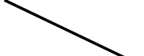
( \(- 9) (+8) (-5) (+7)\)
Ans. (+5) (-7) ( \(- 8) (+9)\)
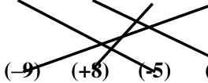
(+7)
Q. Who is on the lowest floor?
- Jay is in the Art Centre. So, he is on Floor +2.
- Asin is in the Sports Centre. So, she is on Floor +5.
- Binnu is in the Cinema Centre. So, she is on Floor -3.
- Aman is in the Toys Shop. So, he is on Floor -1.
Ans. Binnu is on the lowest floor.
Page No. 247
Figure it out
Q.1. Compare the following numbers using the Building of Fun and fill in the boxes
with < or >.
Ans. a. ( \(- 2) +5 b\). ( \(- 5) + 4 c\). ( \(- 5) - 3\)
d. \(+6\) \(>\) \(-6\) e. \(0\) \(>\) \(-4\) f. \(0\) \(<\) \(+4\)
Ans. a. \(< b\). \(< c\). \(< d\). \(> e\). \(> f\). <
Q.2. Imagine the Building of Fun with more floors. Compare the numbers and fill in the
boxes with < or >:
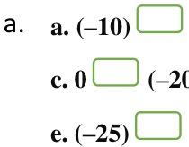
a. \(-10\) \(>\) \(-12\) b. \(+17\) \(>\) \(-10\)
c. \(0\) \(>\) \(-20\) d. \(+9\) \(>\) \(-9\) e. \(-25\) \(<\) \(-7\) f. \(+15\) \(>\) \(-17\)
Ans. a. \(> b\). \(> c\). \(> d\). \(> e\). \(< f\). >
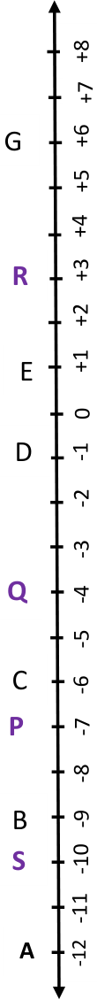
Q.3. If Floor \(A = - 12\), Floor \(D = - 1\) and Floor \(E = + 1\) in the building shown on the right
as a line, find the numbers of Floors B, C, F, G and H.
Ans. \(B = -9 C = -6 F = +2 G = +6 H = +11\)
Q.4. Mark the following floors of the building shown on the right.
a. -7 b. -4 c. +3 d. -10
Ans. a. \(P = -7\) b. \(Q = -4\) c. \(R = +3\) d. \(S = -10\)
Page 248
Q. Evaluate \(15 - 5\), \(100 - 10\) and \(74 - 34\) from this perspective.
Ans.
- \(15 - 5\) can be expressed as \(5 +\) ? \(= 15\). So, ? \(= 10\)
- \(100 - 10\) can be expressed as \(10 +\) ? \(= 100\). So, ? \(= 90\)
- \(74 - 34\) can be expressed as \(34 +\) ? \(= 74\). So, ? \(= 40\)
Page No. 249
Figure it out
Q. Complete these expressions. You may think of them as finding the movement needed
to reach the Target Floor from the Starting Floor.
- \((+ 1) - (+ 4) =\) _______ b. \((0) - (+ 2) =\) _________
- \((+ 4) - (+ 1) =\) _______ d. \((0) -\) ( \(- 2) =\) _________
- \((+ 4) -\) ( \(- 3) =\) _______ f. ( \(- 4) -\) ( \(- 3) =\) ________
- ( \(- 1) - (+ 2) =\) _______ h. ( \(- 2) -\) ( \(- 2) =\) ________
- ( \(- 1) - (+1) =\) _______ j. \((+ 3) -\) ( \(- 3) =\) ________ Ans. a. (-3)
- (-2)
- (+3) d. (+2)
- (+7) f. (-1)
- (-3)
- (0)
- (-2)
- (+6)
Page No. 251
Figure it out
Q. Complete these expressions.
- \((+ 40) +\) ______ \(= + 200 b\). \((+ 40) +\) _______ \(= - 200\)
- ( \(- 50) +\) ______ \(= + 200 d\). ( \(- 50) +\) _______ \(= - 200\)
- ( \(- 200) -\) ( \(- 40) =\) _______ f. \((+ 200) - (+ 40) =\) _______
- ( \(- 200) - (+ 40) =\) _______
Ans. a. (+160) b. (-240) c. (+250) d. (-150) e. (-160) f. (+160) g. (-240)
Page No. 252
Q. In the other exercises that you did above, did you notice that subtracting a negative
number was the same as adding the corresponding positive number?
Ans. Yes. The infinite lift reminds us of a number line.
Q. If, from 5 you wish to go over to 9, how far must you travel along the number line?
Ans. 4 steps.
Q. Now, from 9, if you wish to go to 3, how much must you travel along the number line?
Ans. One must travel 6 steps backward or move (-6) from 9 to go to 3.
Q. Now, from 3, if you wish to go to \(- 2\), how far must you travel?
Ans. One must travel 5 steps backward or move (-5) from 3 to go to -2.
Page No. 253
Figure it out
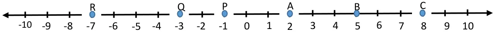
Q1. Mark 3 positive numbers and 3 negative numbers on the number line above.
Ans. Mark \(A = 2\), \(B = 5\), \(C = 8\)
\(P = -1\), \(Q = -3\), \(R = -7\)
(Try other possibilities)
Q2. Write down the above 3 marked negative numbers in the following boxes:
Ans. -7, -3, -1
Q3. Is \(2 > - 3\)? Why? Is \(- 2 < 3\)? Why?
Ans. Yes, \(2 > -3\). On the number line 2 is on the right side of (-3).
Yes, \(-2 < 3\), as 3 is on the right of -2.
Q4. What are (i) \(- 5 + 0\) (ii) \(7 +\) ( \(- 7)\) (iii) \(- 10 + 20\) (iv) \(10 - 20\) (v) \(7 -\) ( \(- 7)\)
f. \(-8 - (-10)\)?
Ans. (i) \(-5 + 0 = -5\) (ii) \(7 + (-7) = 0\) (iii) \(-10 + 20 = 10\) (iv) \(10 - 20 = -10\) (v) \(7 - (-7) = 14\) (vi) \(-8 - (-10) = 2\)
Page No. 255
Q. Use unmarked number lines to evaluate these expressions:
Ans.
- \(-125 + (-30) = -155\)
- \(+105 - (-55) = 160\)
- \(+80 - (-150) = 230\)
- \(-99 - (-200) = 101\)
Page No. 257
Figure it out
Q.1. Complete the additions using tokens.
- \((+ 6) + (+ 4) b\). ( \(- 3) +\) ( \(- 2)\)
- \((+ 5) +\) ( \(- 7)\)
- ( \(- 2) + (+ 6)\)
Ans. a. +10 b. -5 c. (-2) d. (+4)
Q.2. Cancel the zero pairs in the following two sets of tokens. On what floor is the lift
attendant in each case? What is the corresponding addition statement in each case?
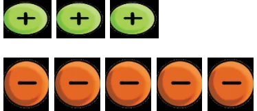
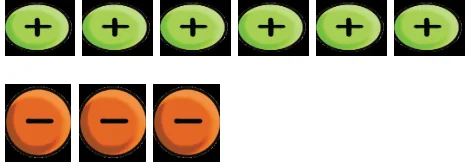
Ans. a. \((+3) + (-5) = (-2)\) b. \((+6) + (-3) = (+3)\)
Attendant is at (-2) Floor Attendant is at (+3) Floor
Page No. 258
Figure it out
Q.1. Evaluate the following differences using tokens. Check that you get the same result
as with other methods you now know:
- \((+ 10) - (+ 7) b\). ( \(- 8) -\) ( \(- 4) c\). ( \(- 9) -\) ( \(- 4)\)
- \((+ 9) - (+ 12) e\). ( \(- 5) -\) ( \(- 7) f\). ( \(- 2) -\) ( \(- 6)\) Ans. a.
\((+10) - (+7) = (+3)\)
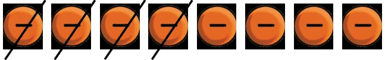
b.
\((-8) - (-4) = (-8) + (+4) = (-4)\)
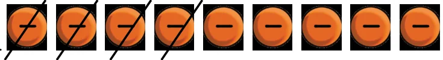
c.
\((-9) - (-4) = (-9) + (+4) = (-5)\)
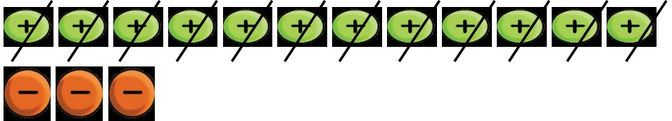
d.
\((+9) - (+12) = (-3)\)
e.
\((-5) - (-7) = (+2)\)
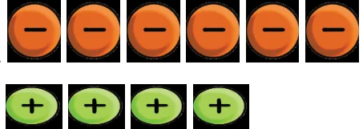
f.
\((-2) - (-6) = +4\)
Try for other methods.
Q.2. Complete the subtractions:
Ans. a. +2 b. -3 c. +2 d. (-5) e. +5 f. (-12)
Section 10.2
Page No. 259
Figure it out
Q.1. Try to subtract: \(- 3 - (+ 5)\).
How many zero pairs will you have to put in? What is the result?
Ans. -8
We have to put five zero pairs.
Q.2. Evaluate the following using tokens.
- ( \(- 3) - (+ 10) b\). \((+ 8) -\) ( \(- 7) c\). ( \(- 5) - (+ 9)\)
- ( \(- 9) - (+ 10) e\). \((+ 6) -\) ( \(- 4) f\). ( \(- 2) - (+ 7)\)
Ans. a. -13 b. +15 c. -14 d. -19 e. +10 f. -9
Section 10.3
Page No. 259
Q. Your new bank balance is _______.
Ans. ₹ \(100 +\) ₹ \(60 =\) ₹ 160
Q. Your bank balance is now ______.
Ans. ₹ \(160 -\) ₹ \(30 =\) ₹ 130
Q. What is your bank balance now? ______ Is this possible?
Ans. ₹ \(130 -\) ₹ \(150 = -\) ₹ 20
Page No. 260
Q. What is your balance now? ______
Ans. ₹ 180
Section 10.3
Page 260
Figure it Out
Q1. Suppose you start with 0 rupees in your bank account, and then you have credits of
₹30, ₹40, and ₹50, and debits of ₹40, ₹50, and ₹60. What is your bank account
balance now?]
Ans. \((+30) + (+40) + (+50) - (40) - (50) - (60)\)
Balance amount in Bank Account = ₹ (-30)
Q2. Suppose you start with 0 rupees in your bank account, and then you have debits of
₹1, 2, 4, 8, 16, 32, 64, and 128, and then a single credit of ₹256. What is your bank
account balance now?
Ans. \((1) - (2) - (4) - (8) - (16) - (32) - (64) - (128) + (256)\)
Balance amount in the Bank Account = ₹ 1
Figure it Out
Page 261
Q.1. Looking at the geographical cross section fill in the respective heights:
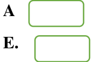
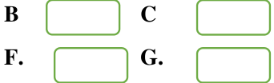
E. F.
Ans. Approximate heights are:
A. (+1500) m
B. (-500) m
C. (+300) m
D. (-1200) m
E. (+1200) m
F. (-200) m
G. (+100) m
Q.2. Which is the highest point in this geographical cross-section? Which is the lowest
point?
Ans. Highest point is A & the lowest point is D.
Q.3. Can you write the points A, B, …., G in a sequence of decreasing order of heights?
Can you write the point in a sequence of increasing order of heights?
Ans. A, E, C, G, F, B, D. (Decreasing order)
D, B, F, G, C, E, A. (Increasing order)
Q.4. What is the highest point above sea level on Earth? What is its height?
Ans. Mount-Everest. Its height above sea level is 8848m.
Q.5. What is the lowest point with respect to sea level on land or on the ocean floor? What
is its height? (This height should be negative).
Ans. The lowest know point on the Earth is the challenger deep, located in the Mariana trench
in the Pacific Ocean. Its depth is approximately -10994 m.
Page 262
Figure it Out
Q.2 Leh in Ladakh gets very cold during the winter. The following is a table of
temperature readings taken during different times of the day and night in Leh on a day in November. Match the temperature with the appropriate time of the day and night.
Ans.
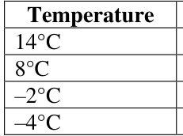
Time
02:00 p.m. 11:00 a.m 11:00 p.m. 02:00 a.m.
Section 10.4
Page 263
Figure it Out
Q.1 Do the calculations for the second grid above and find the border sum.
Ans. -3, -3, -3, -3
Q.2 Complete the grids to make the required border sum:
Ans. One of the ways:
-10 10 4 5 -5 9 -10 5 Border sum +4
6 8 -16 11 -5 -19 -2 19 Border sum -2
7 -2 -9 -3 -5 -8 -6 10 Border sum -4
Think of other ways.
Page 265
Figure it Out
Q.2
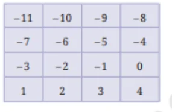
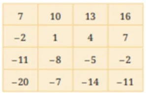
-8 -14
Figure it Out
Q.1 Write all the integers between the given pairs, in increasing order.
- 0 and \(- 7 b\). \(- 4\) and 4 c. \(- 8\) and \(- 15 d\). \(- 30\) and \(- 23\) Ans. a. -6,-5,-4,-3,-2,-1 b. -3,-2,-1,0,1,2,3
- -14,-13,-12,-11,-10,-9 d. -29,-28,-27,-26,-25,-24
Q.2 Give three numbers such that their sum is \(- 8\).
Ans. One of the combinations is -5,7,-10.
Think of other combinations.
Q.3 There are two dice whose faces have these numbers: \(- 1\), 2, \(- 3\), 4, \(- 5\), 6. The smallest
possible sum upon rolling these dice is \(- 10 =\) ( \(- 5) +\) ( \(- 5)\) and the largest possible sum is \(12 = (6)+(6)\). Some numbers between ( \(- 10)\) and (+12) are not possible to get by adding numbers on these two dice. Find those numbers.
Ans. -9,-7,-5,0,2,7,9,11
Q.4 Solve these:
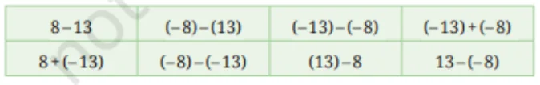
Ans.
Q.5 Find the years below.
- From the present year, which year was it 150 years ago? ________
- From the present year, which year was it 2200 years ago? _______ Hint: Recall that there was no year 0.
- What will be the year 320 years after 680 BCE? ____
Ans. c. -360 BCE
Q.6 Complete the following sequences:
Ans. a. -16, -10, -4 b. -1, 8, -2 c. 27, 19, ... -8, -9, -9
Q.7 Here are six integer cards: (+1), (+7), (+18), ( \(- 5)\), ( \(- 2)\), ( \(- 9)\). You can pick any of these
and make an expression using addition(s) and subtraction(s). Here is an expression: \((+18)+(+1) - (+7) -\) ( \(- 2)\) which gives a value (+14). Now, pick cards and make an expression such that its value is closer to ( \(- 30)\).
Ans. One of the ways is \((-2) + (-9) - (+18) - (+1) = -30\)
Q.8 The sum of two positive integers is always positive but a (positive integer) - (positive
integer) can be positive or negative. What about
a. (positive) - (negative) b. (positive) + (negative) c. (negative) + (negative) d. (negative) - (negative) e. (negative) - (positive) f. (negative) + (positive)
Ans. a. positive b. can be positive or negative c. negative d. can be positive or negative e. negative f. can be positive or negative
Q.9 This string has a total of 100 tokens arranged in a particular pattern. What is the
value of the string?
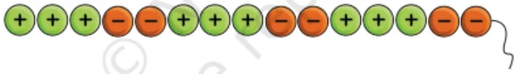
Ans. 20